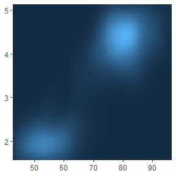
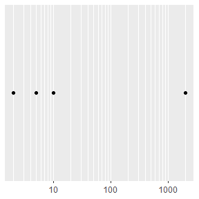

各位看客：
Learn-R 仍在写作流程中。本章节正在进行写作和结构调整，可能出现混乱或不完整的情况。
Learn-R 仍在写作流程中。本章节正在进行写作和结构调整，可能出现混乱或不完整的情况。
标度控制数据到美学的映射，它将数据转为大小（size）、颜色（color）、位置（position）或形状（shape），它也提供了解释绘图的工具：坐标轴和图例。
lims()或limits参数可用于修改坐标轴范围，需要接受长度为2的数值型向量。如果只设置单侧范围，另一侧设置为NA。
mpg %>% filter(year == 1999) %>%
ggplot(aes(displ, hwy)) +
geom_point() +
scale_x_continuous(limits = c(1, 7)) +
scale_y_continuous(limits = c(10, 45))
mpg %>% filter(year == 2008) %>%
ggplot(aes(displ, hwy)) +
geom_point() +
lims(x = c(1, 7), y = c(10, 45))

如果目标是放大绘图的一部分，使用coord_cartesian()的xlim和ylim参数通常会更好。
base <- ggplot(mpg, aes(drv, hwy)) +
geom_hline(yintercept = 28, color = "red") +
geom_boxplot()
base
base + coord_cartesian(ylim = c(10, 35))
base + ylim(10, 35)
#> Warning: Removed 6 rows containing non-finite values (stat_boxplot).

base <- ggplot(faithfuld, aes(waiting, eruptions)) +
geom_raster(aes(fill = density)) +
theme(legend.position = "none") +
labs(x = NULL, y = NULL)
base
base +
scale_x_continuous(expand = expansion(0)) +
scale_y_continuous(expand = expansion(0))
base +
scale_x_continuous(expand = expansion(add = 3)) +
scale_y_continuous(expand = expansion(add = 3))
base +
scale_x_continuous(expand = expansion(mult = .2)) +
scale_y_continuous(expand = expansion(mult = .2))
base +
scale_x_continuous(expand = expansion(mult = c(.05, .2))) +
scale_y_continuous(expand = c(.05, 0, .2, 0))

add参数是在与数据变量相同的尺度上指定的，mult参数是相对于轴的范围指定的。
toy <- data.frame(
const = 1,
up = 1:4,
txt = letters[1:4],
big = (1:4) * 1000,
log = c(2, 5, 10, 2000)
)
toy
#> const up txt big log
#> 1 1 1 a 1000 2
#> 2 1 2 b 2000 5
#> 3 1 3 c 3000 10
#> 4 1 4 d 4000 2000通过向breaks参数传递数值，可手动设置断点。设置breaks = NULL移除断点和相关的刻度线。
base <- ggplot(toy, aes(big, const)) +
geom_point() +
labs(x = NULL, y = NULL) +
scale_y_continuous(breaks = NULL)
base需注意，手动设置断点会移动主要和次要网格线：
base + scale_x_continuous(breaks = c(1000, 2000, 4000))
base + scale_x_continuous(breaks = c(1000, 1500, 2000, 4000))
也可以向breaks传递函数，该函数应有一个指定标度范围的参数（长度为2的数值型向量），并且返回断点的数值型向量。scales包(Wickham and Seidel 2022)提供了一些有用的工具：
scales::breaks_extended()为数值轴自动创建断点（ggplot2的标准方法）；scales::breaks_log()为对数轴自动创建断点；scales::breaks_pretty()为日期/时间创建断点；scales::breaks_width()创建等距的断点。base +
scale_x_continuous(breaks = scales::breaks_width(800))
base +
scale_x_continuous(breaks = scales::breaks_width(800, offset = 200)) # 偏移
base +
scale_x_continuous(breaks = scales::breaks_width(800, offset = -200))
次要断点（主网格线之间未标记的网格线）对于对数轴特别有用，因为它清晰地展示了刻度是非线性的。
mb <- unique(as.numeric(1:10 %o% 10 ^ (0:3)))
mb
#> [1] 1 2 3 4 5 6 7 8 9 10
#> [11] 20 30 40 50 60 70 80 90 100 200
#> [21] 300 400 500 600 700 800 900 1000 2000 3000
#> [31] 4000 5000 6000 7000 8000 9000 10000base <- ggplot(toy, aes(log, const)) +
geom_point() +
labs(x = NULL, y = NULL) +
scale_y_continuous(breaks = NULL)
base + scale_x_log10()
base + scale_x_log10(minor_breaks = mb)

base <- ggplot(toy, aes(big, const)) +
geom_point() +
labs(x = NULL, y = NULL) +
scale_y_continuous(breaks = NULL)
base
base + scale_x_continuous(
breaks = c(2000, 4000),
labels = c("2k", "4k")
)

通常不需要手动设置labels参数，和breaks参数一样，scales包提供了有效的函数：
scales::label_bytes()将数字转化为kb、mb等字节格式；scales::label_comma()为数字添加逗号；scales::label_dollar()将数字转为货币；scales::label_ordinal()将数字转为等级顺序；scales::label_percent()将数字转为百分数；scales::label_pvalue()将数字转为p值。base <- ggplot(toy, aes(big, const)) +
geom_point() +
labs(x = NULL, y = NULL) +
scale_x_continuous(breaks = NULL)
base
base + scale_y_continuous(labels = scales::label_percent())
base + scale_y_continuous(labels = scales::label_dollar(prefix = "", suffix = "€")) # 默认前缀$


注意breaks = NULL和labels = NULL的差别：
base + scale_y_continuous(breaks = NULL)
base + scale_y_continuous(labels = NULL)每一个连续的标度都带有允许使用各种转换的trans参数。
ggplot(mpg, aes(displ, hwy)) +
geom_point() +
scale_y_continuous(trans = "reciprocal") # y轴取倒数
# x和y轴取10为底的对数
ggplot(diamonds, aes(price, carat)) +
geom_bin2d() +
scale_x_continuous(trans = "log10") +
scale_y_continuous(trans = "log10")

可以使用scales::trans_new()构建转换，scales包同样提供了许多常见的转换：
| Name | Transformer | Function \(f(x)\) | Inverse \(f^{-1}(x)\) |
|---|---|---|---|
"asn" |
scales::asn_trans() |
\(\tanh^{-1}(x)\) | \(\tanh(y)\) |
"exp" |
scales::exp_trans() |
\(e ^ x\) | \(\log(y)\) |
"identity" |
scales::identity_trans() |
\(x\) | \(y\) |
"log" |
scales::log_trans() |
\(\log(x)\) | \(e ^ y\) |
"log10" |
scales::log10_trans() |
\(\log_{10}(x)\) | \(10 ^ y\) |
"log2" |
scales::log2_trans() |
\(\log_2(x)\) | \(2 ^ y\) |
"logit" |
scales::logit_trans() |
\(\log(\frac{x}{1 - x})\) | \(\frac{1}{1 + e(y)}\) |
"probit" |
scales::probit_trans() |
\(\Phi(x)\) | \(\Phi^{-1}(y)\) |
"reciprocal" |
scales::reciprocal_trans() |
\(x^{-1}\) | \(y^{-1}\) |
"reverse" |
scales::reverse_trans() |
\(-x\) | \(-y\) |
"sqrt" |
scales::scale_x_sqrt() |
\(x^{1/2}\) | \(y ^ 2\) |
当然，也可以手动进行这些转换，绘制的图形外观是一样的，但是刻度标签将有所差异。具体来讲，如果使用转换标度，刻度标签将展示原始的数据空间；如果手动转换数据，刻度标签将展示转换后的数据空间。
# 手动转换数据
ggplot(mpg, aes(log10(displ), hwy)) +
geom_point()
# 转换标度
ggplot(mpg, aes(displ, hwy)) +
geom_point() +
scale_x_log10()